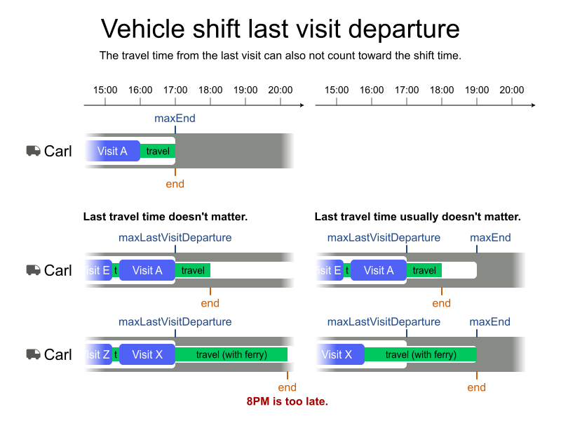
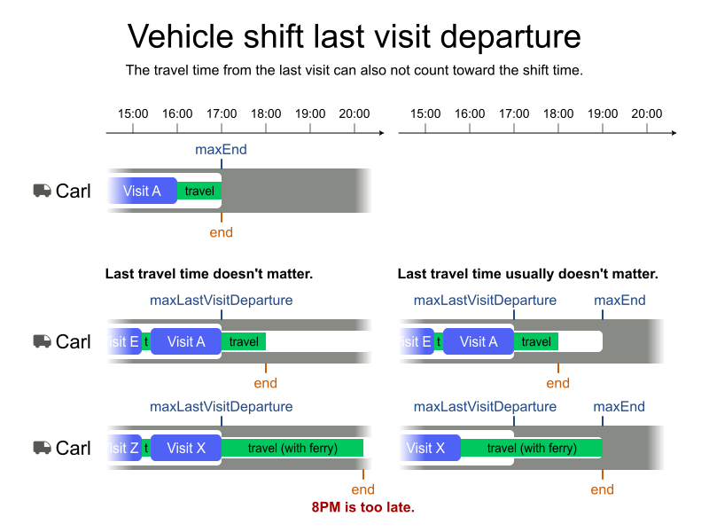
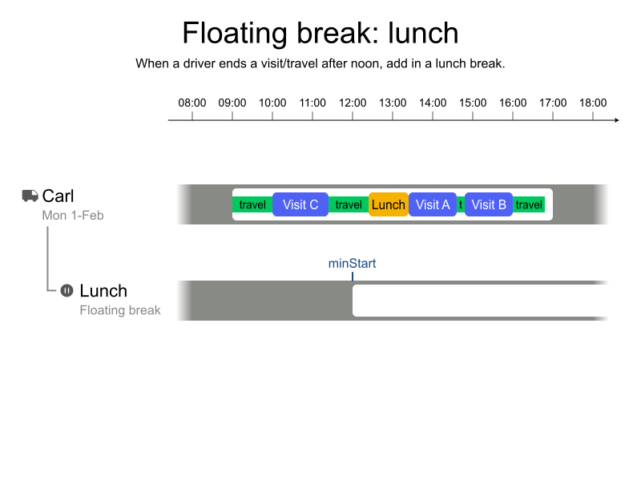
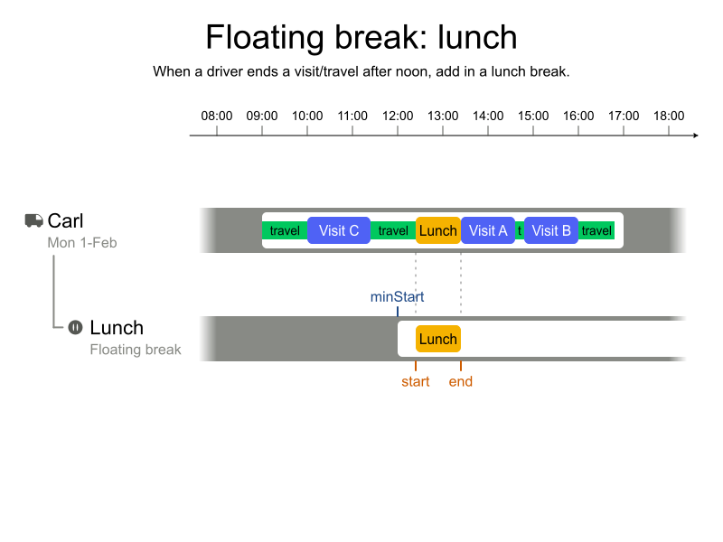
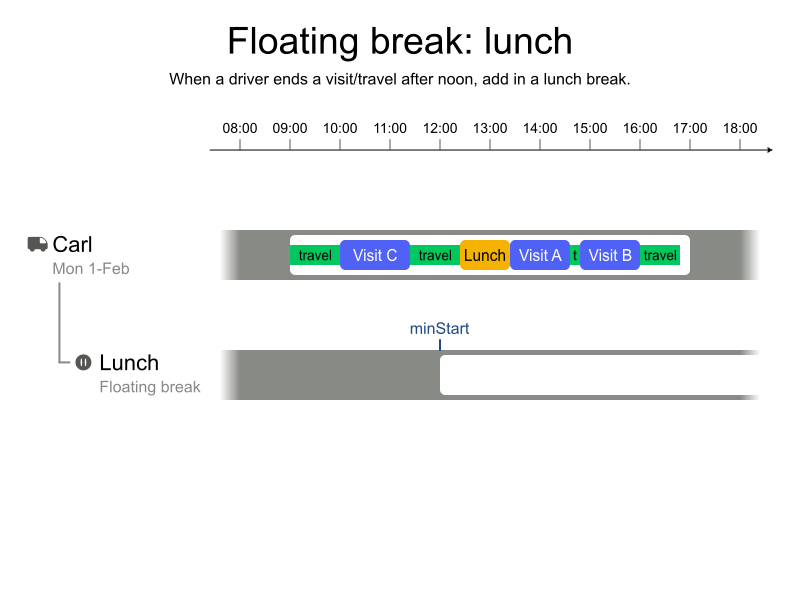
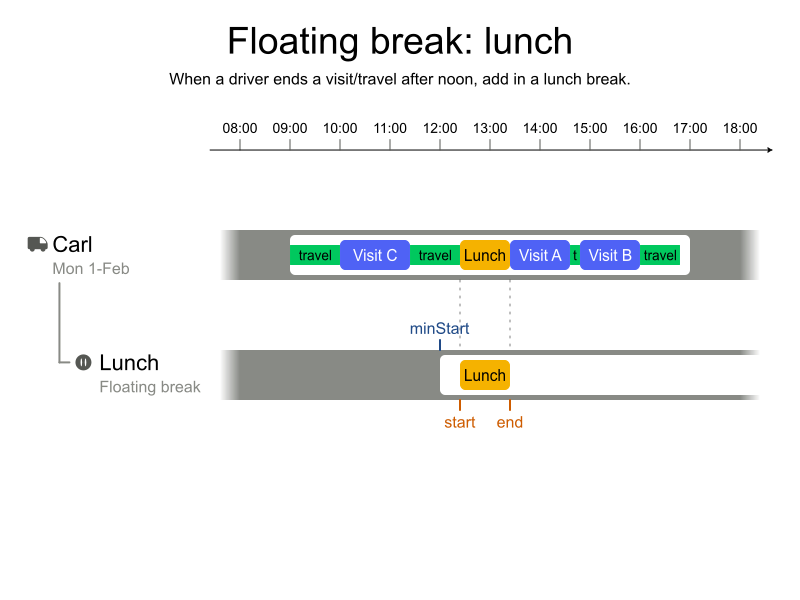

Geoffrey De Smet
Geoffrey De Smet
Job Scheduling
by Geoffrey De Smet
Introduction
Time windows and opening hours
Shift hours and overtime
 

Lunch breaks and personal appointments
 



Skills and skill levels
Dependencies between visits
Visit assignment restrictions
Technician costs

Fairness
Multi-vehicle visits


Real-time planning


Recommend time window
Timezones and daylight saving time

Q & A
| Learn more | timefold.ai |
|---|---|
| Get started | app.timefold.ai |
| Feedback |
|